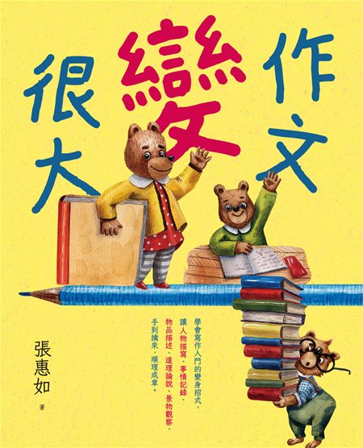
寫作，從有話想說開始
寫作理念 ・ 會考題目 ・ 課程地圖先問你一個問題
會不會停下來問「這有什麼用」？
寫作其實也一樣 ── 當你有話想說，寫作就會變成你的好幫手，而不是討厭的作業。
寫作，能為你做三件事
寫作是說話
有些話你說不出口，卻寫得出來。寫作，是把心裡的話好好說清楚。
寫作是力量
會表達的人，將來更容易說服別人、被別人聽見 ── 這是 AI 也搶不走的能力。
寫作是看見世界
同一個畫面，每個人注意到的細節都不一樣。寫作，是把你看見的世界交給讀者。
接下來七堂課，我們一起把寫作變成一件「有話想說」的事。
先看看會考作文怎麼考
從產品文案、社群標題、報章雜誌標題中，觀察標題怎麼設計、反映什麼現象。
看圖一與圖二，選一個詞彙來說明情境，再連結自己的生活觀察或經驗。
從日常事物出發，思考它如何翻新樣式、結合新元素，呈現新的面貌。
觀察標題設計，寫出自己的看法
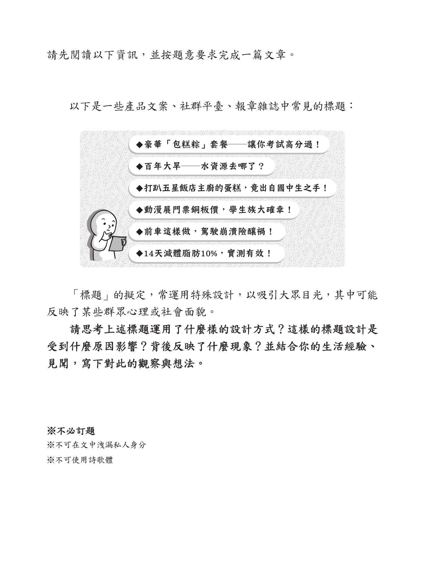
先看圖，再選詞，再寫感受

從生活物品，看見新的可能

今天先練一件事：把描述變多
看見
人、物、地點、動作、光線、聲音。
選擇
挑最重要的三個細節，不用全部塞進去。
放大
從「我看到教室」變成「我看到雨後的教室」。
我們的七堂課地圖
這七堂課，我們會先學會「看見更多」，再一步一步把「話寫清楚」。每一堂都會自己寫一篇文章！
安靜觀察 ・ 寫出畫面
壞人真的全壞嗎？替反派平反
不靠成語，也能寫得很好
用五感，把讀者拉進現場
先擺地攤再挑貨 ・ 訂小標
三種讓人想看下去的開頭
寫一份能說服大人的企劃書
看別人怎麼寫，再寫自己的
因為我有話要說
安靜觀察 ・ 景物描寫「寫作文有什麼用？」其實是假議題
寫作，先從一句「看得見」開始
物品
不是「桌上有東西」，而是「桌角有一本攤開的筆記本」。
位置
不是「書包在那裡」，而是「書包靠在椅腳旁，拉鍊半開」。
動作
不是「下雨了」，而是「雨水沿著窗框一滴一滴往下滑」。
一句話怎麼變大？先把它看清楚
先不要討論，自己慢慢看
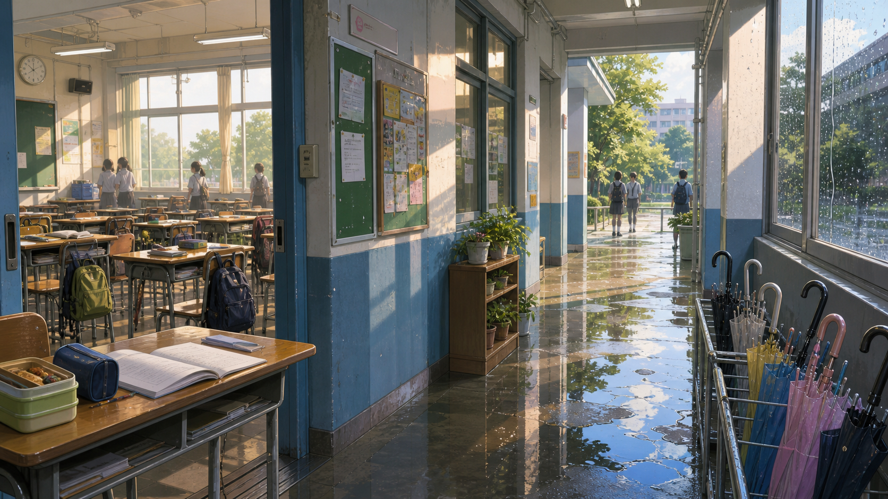
桌上有什麼？它們的位置、顏色、狀態是什麼？
教室、走廊、雨傘、積水，哪一個最吸引你？
窗外的光、樹、遠方學生，讓畫面變成什麼氣氛？
如果你站在那裡，會覺得安靜、期待、孤單，還是放鬆？
不是寫更多字，是寫得更看得見
桌上很亂。
桌角攤著一本沒闔上的筆記本，藍色鉛筆盒斜斜壓在紙邊。
走廊很濕。
走廊地板留著一塊塊水痕，窗外的光被踩成碎碎的亮片。
我很緊張。
我一直捏著書包背帶，手心黏黏的，連拉鍊聲都覺得太大。
太短的版本：有看到，但還不夠清楚
雨後的教室
放學後，走廊很安靜。地上有水，窗外有樹，教室裡有桌椅。我覺得這個地方很漂亮，也有一點孤單。
點一下問題，翻出可以直接學的句子
誰還沒有回來？為什麼那個人值得等？
我站在門口等了很久，直到走廊的水光慢慢暗下來，那個人還是沒有回來。
被留下的東西，會不會代表一件重要的事？
桌上的筆記本沒有闔上，像主人只是離開一下，卻把一個下午留在原位。
這個地方是不是某個人最後一次經過？
我回頭看那間教室，知道明天開始，它就只是我曾經待過的地方。
雨停之後，有沒有什麼心情也慢慢亮起來？
雨停以後，地板還是濕的，但窗外的光已經先替新的一天鋪好路。
完整的版本：讓讀者真的站進畫面
雨後的教室
雨停後，走廊沒有立刻恢復熱鬧。地板上還有水，水裡映著窗框和樹。幾把雨傘靠在牆邊，像被留下來值班。
教室門開著。一本筆記本攤在靠門的桌上，鉛筆盒壓住紙角。這些東西都很普通，可是它們說明一件事：人剛走，聲音也剛走。
遠處幾個學生走向校門，腳步很輕。我站在門邊，看著走廊慢慢變暗。那一刻我明白，安靜不是什麼都沒有。安靜是剛剛發生過的事，還留在原來的位置。
寫作任務：像會考一樣看圖寫作
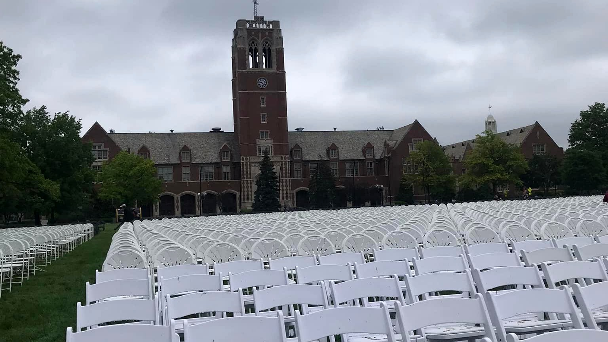
題目：典禮結束以後
左圖是一處國小畢業典禮結束後的場景。請根據圖片內容，寫一篇短文。
- 可以先描寫你看見的景物，例如椅子、舞台、麥克風、花束、光線。
- 再想像一個剛離開或還沒離開的人，寫出他當時的心情。
- 文章不必逐項介紹圖片，但要讓讀者知道：典禮結束後，某個人心裡發生了什麼變化。
寫作，是思考的練習
看見 ・ 懷疑 ・ 理解 ・ 選擇把字寫漂亮。
是把想法
想清楚。
我們每天都在替事情下結論：他很討厭我、這件事很不公平、我就是做不到。
可是，結論不一定等於事實。寫下來，才能把腦中的想法放到桌上，慢慢看它：它是真的嗎？還有別的解釋嗎？
把腦中的話寫下來，才看得見它
先分開
什麼是我真的看見、聽見的？什麼只是我猜的？
再追問
除了我的第一個答案，還有沒有另一種可能？
最後選擇
知道後果以後，我還想怎麼說、怎麼做？
伏爾泰：先照顧自己能改變的地方
「耕耘自己的花園」不是只管自己
我不能控制
別人立刻懂我、事情馬上公平、每個人都喜歡我。
我可以練習
把事情說完整、問清楚、不用一句話就替別人定罪。
我可以選擇
寫下真正的理由，再決定要不要生氣、道歉或再問一次。
雨果：寫作讓看不見的問題被看見
同一件事，誰的聲音還沒被寫進去？
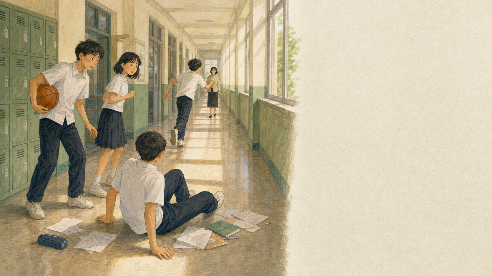
我只看到小安跑去找老師，所以先以為他愛把事情鬧大。
我聽到小恩喊痛，也看見他一時站不起來；我怕他受傷。
我轉身太快，沒有看見身後的人。不是故意，卻還是撞到他，應該先道歉、一起收講義。
我膝蓋很痛，也覺得大家都在看我；我不想被當成故意找麻煩的人。
茲威格：時代給畫面，人要決定怎麼說
事實沒有變，故事可以有不同入口
看見空椅子的人
可能想到告別、離開，或一段結束。
看見舞台的人
可能想到等待、表演前的緊張，或還沒說完的話。
看見地上花瓣的人
可能想到熱鬧過後的安靜，或一件剛剛發生的事。
毛姆：思考不是等靈感，是反覆動筆
把想法寫出來，才有機會修正它
第一個念頭
「我不想跟他一組，因為他很煩。」
這是感受，還沒有說清楚發生什麼事。
寫過、想過以後
「我不想跟他一組，因為上次分工時他一直插話，我覺得自己的意見沒有被聽見。」
感受還在，但有了可以討論的事情。
歐威爾：語言和思考會互相影響
你用了什麼字，也在決定你怎麼想
模糊的話
「他就是很自私。」
這句話把人固定住，也不知道下一步能怎麼辦。
比較準確的話
「分零食時，他先拿了兩份，沒有先問別人要不要。」
行為被說清楚了，才可以討論它對不對、要怎麼改。
吳爾芙：字不是字典裡的死東西
抽象的感受，要有具體的證據
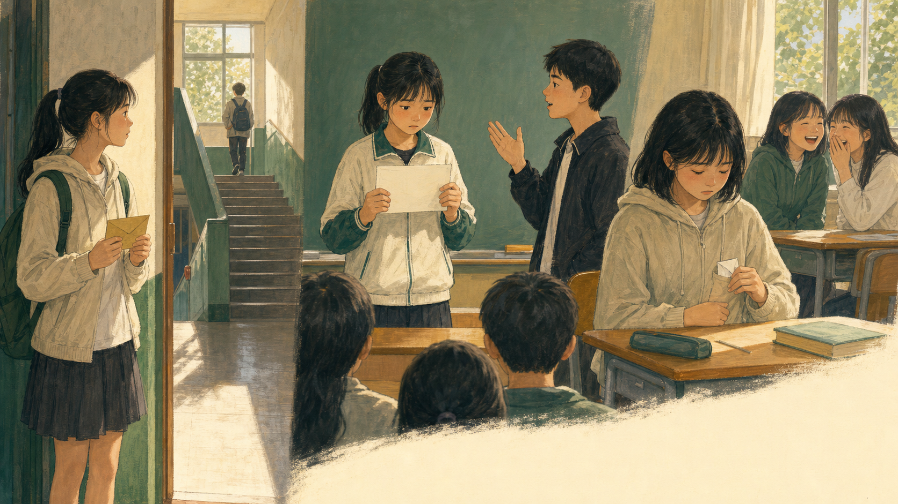
期待
不要只寫：我很期待。
可以這樣寫：我站在樓梯口，手裡捏著信封，眼睛一直往轉角看，等那個熟悉的書包先出現。
緊張
不要只寫：我很緊張。
可以這樣寫：輪到我報告時，紙卡被我捏出一道折痕；明明只有幾行字，聲音卻卡在喉嚨裡。
委屈
不要只寫：我很委屈。
可以這樣寫：聽見那句玩笑後，我把原本想說的話折成一小團，塞進口袋，假裝自己沒有聽見。
寫作，讓我們不急著把人變成一句話
先看事實
到底發生了什麼？不要先替事情取外號。
再想角度
我看見了什麼？別人可能又看見什麼？
最後負責
理解原因，不代表把錯誤變成沒關係。
反派有話要說
壞人真的全壞嗎？替反派平反平反不是洗白，是把「為什麼」補完整
先承認
他確實做錯了什麼，不替錯事找藉口。
再追問
他為什麼會走到這一步？壓力在哪裡？
補心聲
把反派說不出口的害怕、羨慕或孤單寫出來。
給出路
想一個不傷人的做法，讓故事有轉圜。
先用《灰姑娘》練一次
灰姑娘的媽媽過世後，爸爸再婚，後母帶著兩個女兒住進家裡。後母把洗衣、掃地、煮飯都交給灰姑娘，讓她每天忙到睡在灰燼旁。
王子舉辦舞會時，灰姑娘也想去。後母卻說她不配，還帶著兩個女兒先走。灰姑娘靠仙女的幫助進了皇宮，王子最後用水晶鞋找到了她。
偏心、欺負灰姑娘、阻止她去舞會。
她帶著兩個女兒改嫁，沒有安全感，怕女兒輸給灰姑娘，也怕失去生活依靠。
承認她做錯，但寫出她其實是被恐懼推著走。
替「後母」問四個問題
- 後母做錯了什麼？先不要把錯事拿掉。
- 她最害怕失去什麼？生活依靠、女兒未來，還是被取代？
- 她真正想說卻說不出口的話是什麼？
- 如果重來一次，她可以怎麼做，才不會傷害灰姑娘？
〈後母的日記〉
後母的日記
今天，我又對灰姑娘說了很重的話。
我知道她低下頭的樣子很可憐，可是當我看見她站在兩個女兒旁邊，心裡就像被什麼抓住。她年輕、漂亮、安靜，連灰撲撲的衣服都遮不住她的光。
我不是不知道自己做錯了。我只是太怕了。這個家不是我的，錢也不是我的。如果我的女兒沒有被看見，將來我們三個還能靠誰生活？
如果可以重來，我想先承認自己的害怕，而不是把害怕變成命令。也許我可以牽著三個女孩一起去舞會，而不是把其中一個留在灰燼旁。
三個故事，你只要選一個
她偏心、欺負灰姑娘，還阻止她去舞會。
可以寫：害怕女兒沒有未來、怕失去生活依靠。
牠吹倒房子，威脅小豬。
可以寫：飢餓、求助失敗、只懂用力氣。
她嫉妒白雪公主，想害她。
可以寫：害怕變老、害怕被取代、太相信鏡子。
先讀故事，再選一則來寫；選好就專心把那個角色寫深。
三隻小豬：原本的故事怎麼寫？
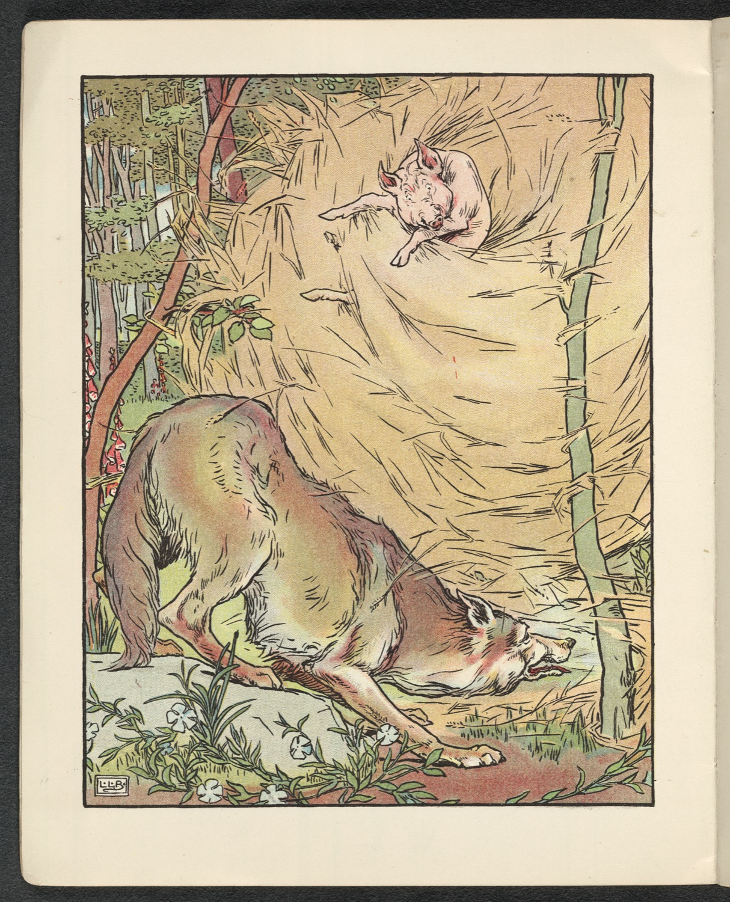
三隻小豬離開家，各自在森林裡蓋房子。第一隻用稻草，第二隻用木頭，第三隻花了很久，用磚頭蓋出結實的房子。
大野狼來到稻草屋前，說要吹倒房子。牠一吹，稻草屋就倒了；小豬逃到木頭屋。狼又吹倒木頭屋，兩隻小豬只好一起逃進磚頭屋。
磚頭屋怎麼吹都不倒。狼想從煙囪進去，最後沒有成功，只能離開。原本的故事把重點放在小豬的勤勞與安全，也把狼寫成一個只想傷害人的敵人。
牠一出現，就威脅、吹房子，沒有解釋。
小豬努力蓋房，讀者自然希望牠們安全。
狼為什麼來？牠心裡有沒有別的想法？
如果狼也能寫日記：那隻一直敲門的狼
冬天快到了，大野狼已經兩天沒有找到食物。牠沿著森林邊緣走，看見三隻小豬各自蓋好房子；從第一間稻草屋裡飄出熱湯和麵包的味道。
牠先敲門，屋裡沒有回答。牠又大聲說話，可是小豬只把門鎖得更緊。牠越來越急，對著稻草屋吹了一口氣，房子倒了；小豬尖叫著逃往下一間屋子。
故事裡，大家只記得牠用力吹倒房子。可是，如果牠早一點知道怎麼開口求助，或者小豬願意隔著門遞給牠一點食物，這個下午會不會有別的結局？
用威脅和力氣逼小豬開門，讓人害怕。
挨餓、被拒絕，或是根本沒有人願意聽他說話。
承認牠吹倒房子不對，再寫牠如何學著開口求助。
白雪公主：原本的故事怎麼寫？
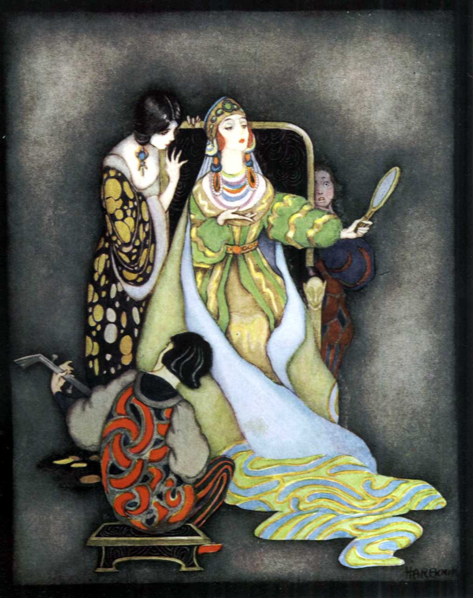
皇后每天都問魔鏡：「誰是世界上最美的人？」鏡子總回答皇后。直到白雪公主長大，鏡子說白雪公主比皇后更美。
皇后非常嫉妒，命令獵人把白雪公主帶進森林。獵人不忍心傷害她，白雪公主便逃到七個小矮人的家。皇后知道後，又假扮成別人，用毒蘋果讓白雪公主倒下。
後來白雪公主醒來，和王子離開。原本的故事把皇后寫成嫉妒又危險的人；魔鏡的回答像是一道命令，卻沒有人問皇后除了美麗，還想被看見什麼。
她嫉妒、下命令、一次次想阻止主角。
白雪公主善良又受傷害，讀者想保護她。
皇后為何如此依賴魔鏡的答案？
如果皇后寫給自己：每天問鏡子的皇后
皇后每天都站在鏡子前，問同一個問題：「誰是世界上最美的人？」鏡子總是照實回答。直到有一天，它說白雪公主比她更美。
皇后愣在原地。她想起自己曾經被稱讚的日子，也想起那些因為她年紀漸長而不再停留的目光。她沒有把這份害怕告訴任何人，反而把它變成命令，要獵人帶白雪公主離開。
她的選擇傷害了別人，這件事沒有藉口。不過，若日記是她寫給自己的，也許她第一次能承認：她一直追著鏡子的答案，因為她不知道，除了「最美」，自己還剩下什麼。
因為嫉妒而想傷害白雪公主，把人當成競爭對手。
變老、被遺忘，或覺得自己只剩外表值得被愛。
寫她承認恐懼，練習把鏡子放下，而不是傷害別人。
先把壞人的一天寫出來
選一則經典故事，站在「壞人」的角度，先把日記的骨架寫清楚。你可以替他說話，但不能假裝他沒做錯。
- 今天發生的事：用一兩句交代衝突。
- 我知道自己做錯了什麼：不要把錯事拿掉。
- 我心裡真正想說的是：害怕、壓力或想保護的東西。
- 如果重來一次，我會：換一個不傷人的做法。
挑戰：讓讀者讀完後，不一定原諒他，但能理解他。→ 練習本 p.6。
那件被誤解的「壞事」
請回想一件你曾做過、卻被他人深深誤解的「壞事」。你可以說明動機，但也要誠實寫出：那個做法為什麼仍然不夠好。
- 別人看見的是什麼？我當時做了哪件事？
- 我真正想保護、害怕或著急的是什麼？
- 我當時沒有說出口的話是什麼？
- 如果重來一次，我會怎麼說、怎麼做？
寫完檢查：有事情、有心裡話，也沒有把錯事說成沒關係。
日本文學入門
一瞬間 ・ 羅生門 ・ 異世界 ・ 現代流行今天不是背文學史，而是找幾個入口
一瞬間
俳句把季節、聲音、光線收進短短幾行。
小世界
豆本、摺扇、盆栽、便當盒，把龐大的內容變成可近看的形式。
羅生門
人在困境裡，會怎麼替自己的選擇找理由？
異世界
貓、山貓餐廳、銀河鐵道，換一個角度看日常。
幾個適合國中生先知道的名字
俳句：把一個季節縮成一瞬間
蛙飛びこむ
水の音
古老的池塘啊
青蛙跳了進去
水聲。
一個地方
古池。畫面先安靜下來。
一個動作
蛙跳進去。事情發生了。
一個聲音
水聲。詩停在最準的一刻。
不需要先說「我很平靜」。把畫面選準，讀者自己會感覺到。
縮小意識：讓東西變得可以近看
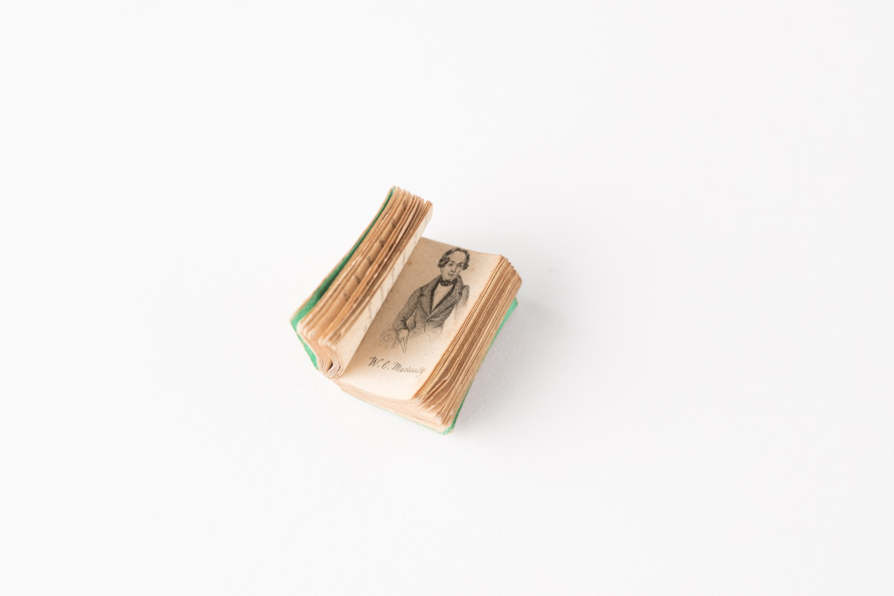
豆本一本書變小，讀者會忍不住靠近。
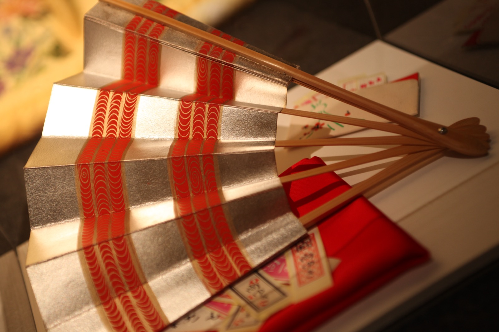
摺扇把風景摺起來，收進手掌。
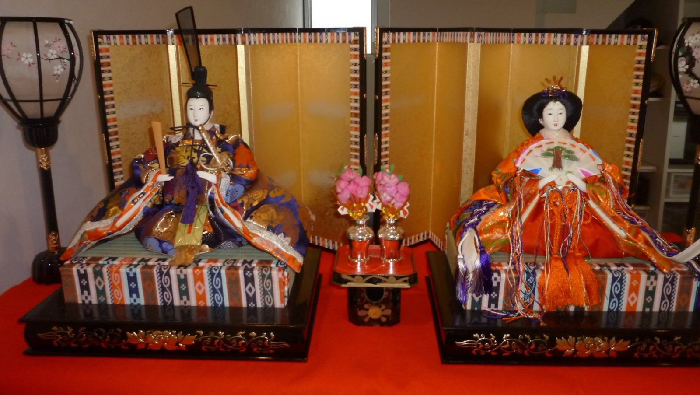
雛人形人物與節日變成可陳列的小場景。
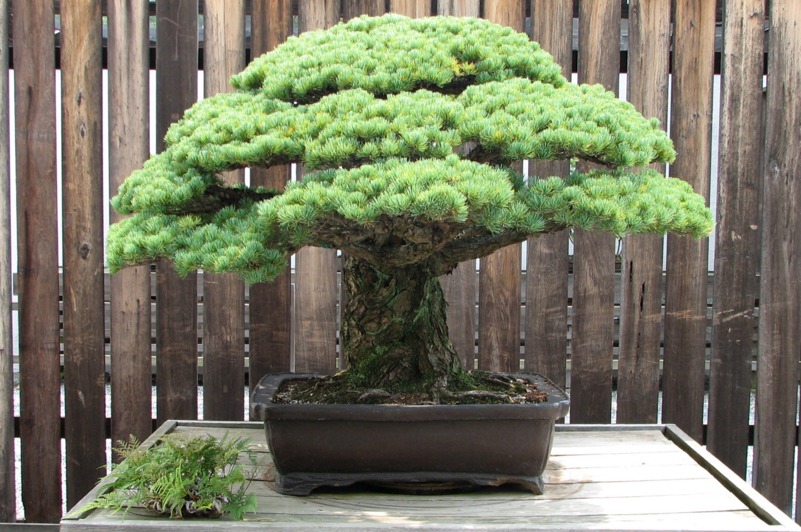
盆栽自然、修剪和時間放進一盆土。
羅生門：故事從一場雨開始
羅生門下，雨停不了。
一個失去工作的下人。
回不去，也不知道明天怎麼活。
他走上門樓，看見老婆婆。
〈羅生門〉開頭：先讓畫面站起來
ある日の暮方の事である。一人の下人が、羅生門の下で雨やみを待っていた。
広い門の下には、この男のほかに誰もいない。
白話導讀：某天傍晚，一個下人在羅生門下等雨停。寬大的門底下，除了他以外沒有任何人。
時間
傍晚。白天快結束，事情也像走到邊緣。
地點
羅生門。大、舊、空，人物顯得更孤立。
狀態
等雨停。人物暫時動不了，故事壓力慢慢出現。
老婆婆也在替自己找理由
「この髪を抜いてな、この髪を抜いてな、鬘にしようと思うたのじゃ。」
「じゃが、ここにいる死人どもは、皆、そのくらいな事を、されてもいい人間ばかりだぞよ。」
白話導讀：老婆婆說，她拔死人的頭髮，是想拿去做假髮。她接著替自己辯解：這些死人生前也做過不好的事，所以被這樣對待也不算過分。
她做了什麼？
拔死人的頭髮，準備拿去換生存的機會。
她怎麼說？
她不是說「我沒做」，而是說「我有理由」。
故事為何有力？
讀者開始思考：困境能不能成為理由？理由能不能抵消傷害？
聽完理由後，他也學會替自己找理由
「では、己が引剥をしようと恨むまいな。己もそうしなければ、饑死をする体なのだ。」
下人の行方は、誰も知らない。
白話導讀：下人說：那麼我搶你的衣服，你也不要怨我，因為我不這麼做就會餓死。故事最後只留下：沒有人知道下人去了哪裡。
《我是貓》：讓一隻貓來看人類
吾輩は猫である。名前はまだ無い。
白話導讀：我是貓，還沒有名字。這一句很短，但視角立刻成立：不是人看貓，而是貓看人。
貓不懂人類規矩，所以人類的動作看起來很荒謬。
換一個說話者，普通生活也會變新鮮。
《要求很多的餐廳》：越讀越不對勁
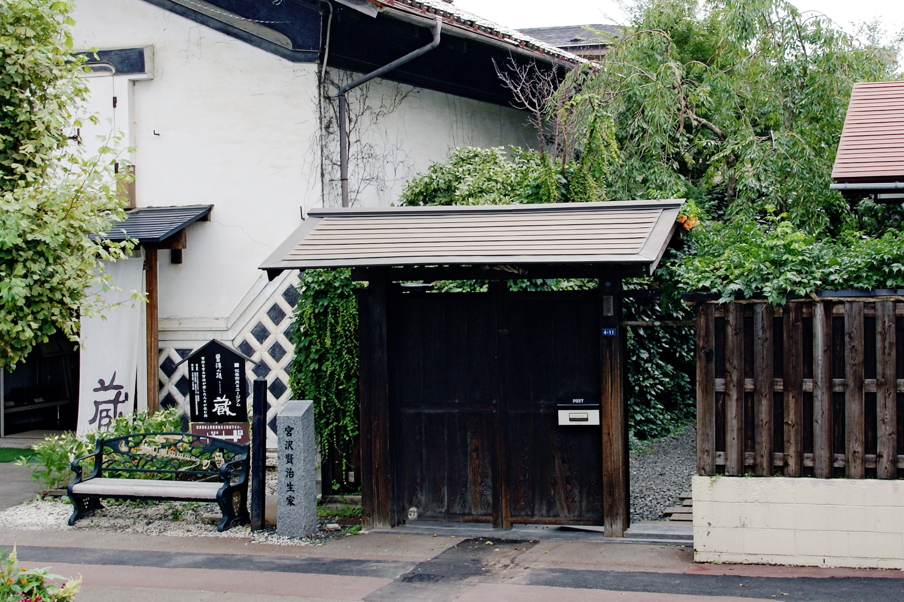
「どなたもどうかお入りください。決してご遠慮はありません」
「当軒は注文の多い料理店ですからどうかそこはご承知ください」
白話導讀：門上的字一開始像歡迎客人，後來卻越來越奇怪。讀者慢慢發現：這間餐廳可能不是給人吃飯的。
現代日本文學可以先認作品氣味
《伊豆的舞孃》《雪國》：美、距離、安靜的情緒。只介紹，不印原文。
《挪威的森林》《海邊的卡夫卡》：城市、音樂、孤獨與奇異感。只介紹，不印原文。
《廚房》：失去之後如何重新生活。只介紹，不印原文。
《解憂雜貨店》《嫌疑犯X的獻身》：故事性強，適合當流行閱讀入口。
《你的名字。》《鈴芽之旅》小說版：影像感強，適合連到場景描寫。
現代作品有版權：可以介紹、推薦、討論；不整理大量原文影印。
今天可以印的，是公版日本文學選文
芥川龍之介〈羅生門〉：場景、困境、理由、選擇。
〈蜘蛛之絲〉〈鼻子〉：短篇、好讀、問題明確。
夏目漱石《我是貓》：用非人視角重新看生活。
宮澤賢治《要求很多的餐廳》：線索、反轉、異世界。
芭蕉、一茶俳句：一瞬間也能留下餘味。
選一篇，寫「我看見的困境、理由、轉折」。
把話寫清楚
不靠成語，也能寫得很好「我媽說要多用成語……」
寫作真正的重點，是把你想說的事，清清楚楚地傳給讀者。成語可以有，但永遠排在「寫清楚」後面。
讓文章變深的，是「連接詞」
一句一句之間，用對連接詞，想法就有了層次 ── 這比硬塞成語有用多了：
因果
因為…所以…
之所以…是因為…
轉折
雖然…但是…
本來…沒想到…
遞進
不但…而且…
甚至…更…
〈一把傘〉
那天放學突然下大雨，我沒帶傘，只能站在騎樓下等。
因為雨越下越大，所以我開始擔心媽媽會在校門口等很久。就在這時候，隔壁班一個我幾乎沒講過話的同學走過來，把傘遞給我，說他家就在附近。雖然我們不熟，但是他什麼都沒多問，就把傘塞到我手上。
我撐著那把藍色的傘走回家，傘面被雨打得啪啪響。我本來以為這只是一件小事，後來卻一直記得。原來幫助別人不一定要認識很久，有時候只是剛好你有傘，而對方正淋著雨而已。
寫作任務：〈一件讓我有感覺的小事〉
這篇規則特別：不准用成語，但至少用上 3 種連接詞。
- 發生了什麼？把時間、地點、人交代清楚。
- 我為什麼有感覺？用「因為…所以…」說明。
- 「雖然…但是…」：寫一個轉折或意外。
寫完和同學互相圈出對方用得好的連接詞。→ 工作本第 3 課。
寫出畫面感
用五感，把讀者拉進現場畫面感，不是靠華麗的詞
一轉頭便嚇得目瞪口呆 ── 那是一隻蟑螂爬行的聲音。」
五感 ＋ 身體反應
👁 看到
巨大、跟茶杯一樣大、閃爍的紅燈…
👂 聽到
滋滋、啪啪、自己的心跳…
✋ 摸到
冰冷的金屬、黏黏的汗…
👃 聞到
霉味、雨後的泥土味…
👅 嚐到
嘴裡發乾、苦苦的…
💓 身體
腿軟、起雞皮疙瘩、發抖…
〈電梯停電那一分鐘〉
電梯停電那一分鐘
我最怕黑。那天我一個人搭電梯回家，電梯到一半，燈突然全暗了。
我看不見任何東西，只看到樓層數字停在一個閃爍的紅色「4」。我聽到電梯裡「嗡」的一聲，接著就是我自己越來越大聲的心跳。我伸手去摸牆壁，金屬板冰冰涼涼的，黏著我手心的汗。我想喊救命，喉嚨卻乾得發不出聲音。
那一分鐘，像一個小時那麼長。後來燈亮了，電梯慢慢往下移動，門打開的瞬間，我衝出去，腿軟得差點跪下來。
現在我每次搭電梯，手都會偷偷按著牆壁 ── 好像這樣，黑暗就不會再突然把我吞掉。
寫作任務：〈我的恐懼〉
寫一次你真正害怕的經驗（怕蟲、怕黑、怕上台、怕被罵…）。
- 那一刻我看到／聽到／摸到什麼？（至少兩種感官）
- 我的身體有什麼反應？
- 後來怎麼結束？現在回想還會怎樣？
挑戰：讓讀者讀到一半，緊張到不敢往下看。→ 工作本第 4 課。
文章的骨架
先擺地攤再挑貨 ・ 訂小標先別管「到底要寫幾段」
段落怎麼分？
不是規定幾段，而是「一個重點一段」。重點換了，就換段。
用 3W 抓主旨
寫什麼、為什麼寫、想讓讀者覺得怎樣 ── 抓住它，就不會離題。
替每一段「訂一個小標」
下一個有趣的小標題，主題立刻清楚，讀者也更想看。以〈我的校園〉為例：
一、會漏水的天才走廊
二、最兇也最好笑的教官
三、永遠搶不到的福利社布丁
寫遊記也一樣
① 列出印象深的行程 ② 挑幾個寫成小段 ③ 各下一個小標 ④ 排順序 ⑤ 最後補開頭
〈我的學校，怪怪的可愛〉
我的學校，怪怪的可愛
我的學校不大，但每個角落都有故事。
一、會漏水的天才走廊
每到下雨天，三樓走廊一定積水，我們都叫它「游泳池」。老師放了三個水桶接水，滴滴答答，像在打節拍。
二、最兇也最好笑的教官
教官講話超大聲，但他每天都偷偷在校門口幫遲到的同學擋雨，自己卻淋得一身濕。
三、永遠搶不到的福利社布丁
福利社的布丁每天只有二十個，下課鐘一響，全校像賽跑一樣衝過去。我到現在只搶到過一次。
這就是我的學校，怪怪的，卻是我每天都想回去的地方。
寫作任務：〈我的校園／一次出遊〉
用「擺地攤 → 挑貨 → 訂小標」組出一篇有 3～4 個小段的文章。
- 地攤：把想到的點子先全部寫在框框裡。
- 挑貨：圈出最精彩的 3～4 個。
- 小標：替每段下一個有趣的標題，再展開。
→ 工作本第 5 課（有「擺地攤」框 + 小標欄）。
抓住讀者
三種讓人想看下去的開頭開頭，決定別人要不要看下去
好消息是：第 5 堂把骨架搭好之後，開頭其實最好寫 ── 因為你已經知道整篇要去哪裡了。
同一個故事，三種開法
用第 4 堂的〈電梯停電那一分鐘〉示範：
① 倒敘法
「現在我每次搭電梯，手都會偷偷按著牆壁。這個習慣，是從那一次停電開始的。」
② 提問法
「你有沒有在電梯裡，突然陷入一片黑暗的經驗？我有，而且只有一分鐘，卻像一輩子。」
③ 畫面法
「燈『啪』地一聲全暗了。樓層數字停在一個閃爍的紅色『4』。」
同一篇〈段考前的書桌〉── 三種開頭
【倒敘版】考卷發下來的那一刻，我才後悔，前一晚不該一直整理那張根本沒在讀的書桌。
【提問版】你會不會也這樣？越是該讀書的時候，越想先把書桌整理得乾乾淨淨？那天段考前，我就是這樣。
【畫面版】橡皮擦排成一列，鉛筆按顏色站好，便利貼貼成一道彩虹 ── 而我的課本，還停在第一頁。
同一件事，三種開頭都把讀者「勾」住了，再接下去寫那晚的故事就好。
寫作任務：替舊文章換三種開頭
拿出第 4 或第 5 堂的文章，只重寫開頭，三種版本都試試：
- 倒敘版：把最後的感受搬到最前面。
- 提問版：用一個問題勾住讀者。
- 畫面版：用一個感官畫面開場。
三選一貼回原文，比比看哪個最吸引人。→ 工作本第 6 課。
說服與修改
寫一份能說服大人的企劃書把話「說進對方心裡」
先表明立場
用「一句話」說清楚你想要什麼，再慢慢說理由。
先懂對方
先說出大人在擔心什麼，再回應 ── 對方才覺得被理解。
企劃書四步 ＋ 修好離手
企劃書四步
① 我想要什麼 ② 為什麼（動機）③ 對大家有什麼好處 ④ 我願意付出什麼（配套）
改文章三件事
① 圈出錯字 ② 刪掉重複囉嗦的句子 ③ 把模糊的地方寫具體
〈請讓我養一隻狗〉
請讓我養一隻狗
親愛的爸爸媽媽，我想養一隻狗。
我知道你們最擔心的是「沒有人照顧」，所以我先想好了：每天早上六點半我自己起床遛牠，放學回家先餵牠、清理牠的窩，週末幫牠洗澡。這些我都寫進一張「責任表」，貼在冰箱上，沒做到就扣我一週的零用錢。
養狗不只是我想要而已，對全家都有好處。奶奶一個人在家會無聊，有狗陪她，她就不會整天看電視看到睡著；而我也能學會照顧另一個生命，不再只想著自己。
我不是一時衝動，這份企劃我想了三天才寫出來。如果你們願意給我一次機會，我會證明：我已經準備好，當一個負責任的主人了。
寫作任務：〈我想爭取的一件事〉
挑一件你真的想爭取的事（養寵物、改門禁、買某樣東西…），寫一份企劃書。
- 立場：用一句話說清楚你想要什麼。
- 理由＋好處：對你、對家人各有什麼好處？
- 配套：你願意負什麼責任？怎麼讓大人放心？
寫完先互相圈錯字，再唸出來「提案」給全班投票。→ 工作本第 7 課。
說進別人心裡
先把心打開，你就會有話想說；
有話想說，這些技巧才真正派得上用場。
七堂課完 ・ 願你找回寫作的熱情與自信